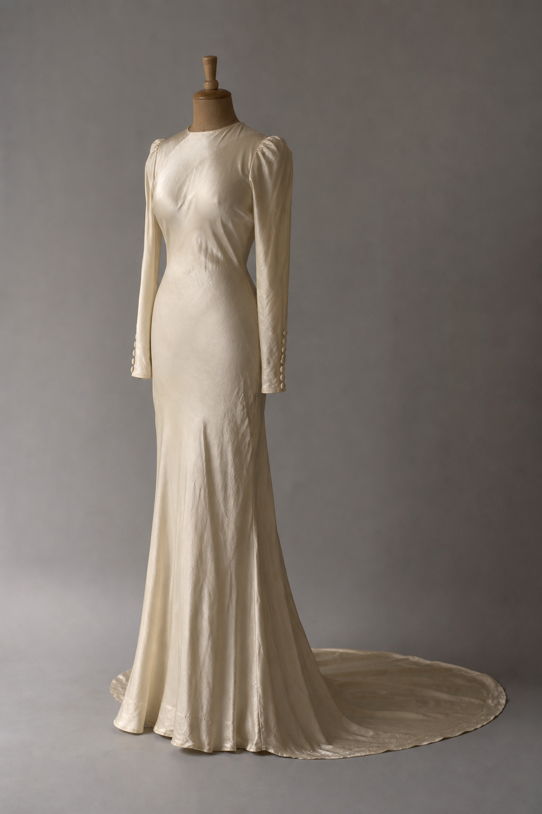
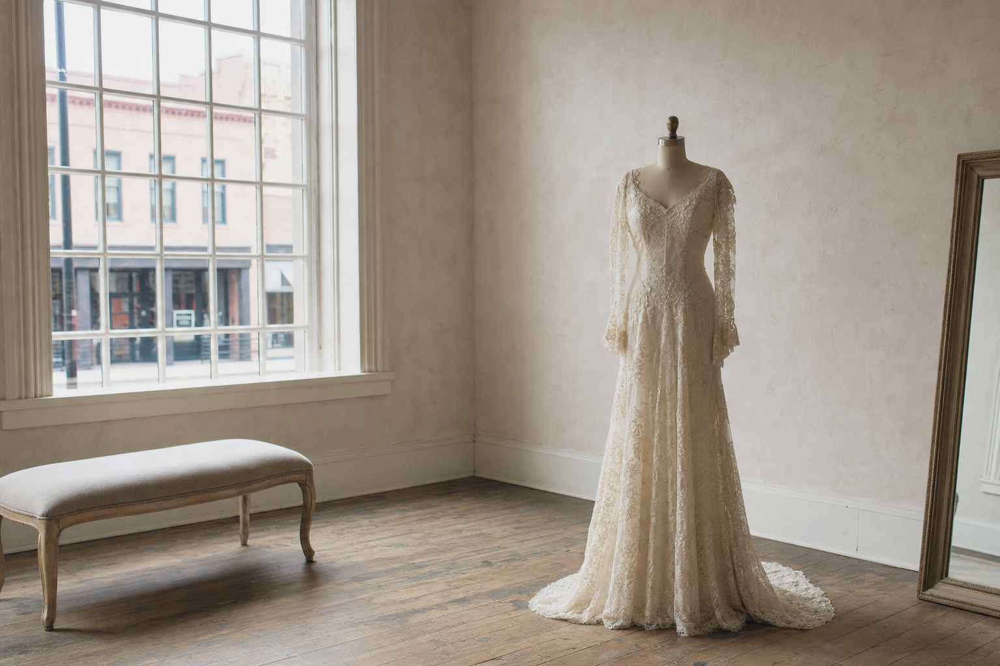
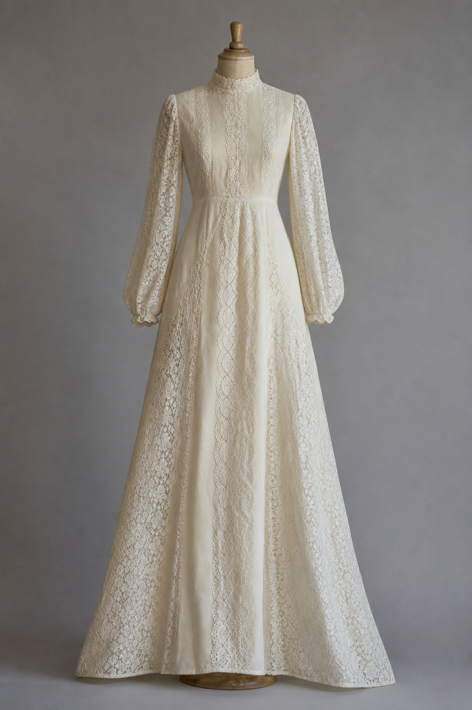
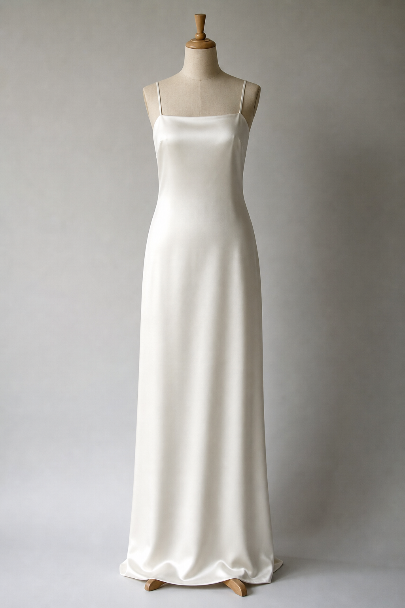
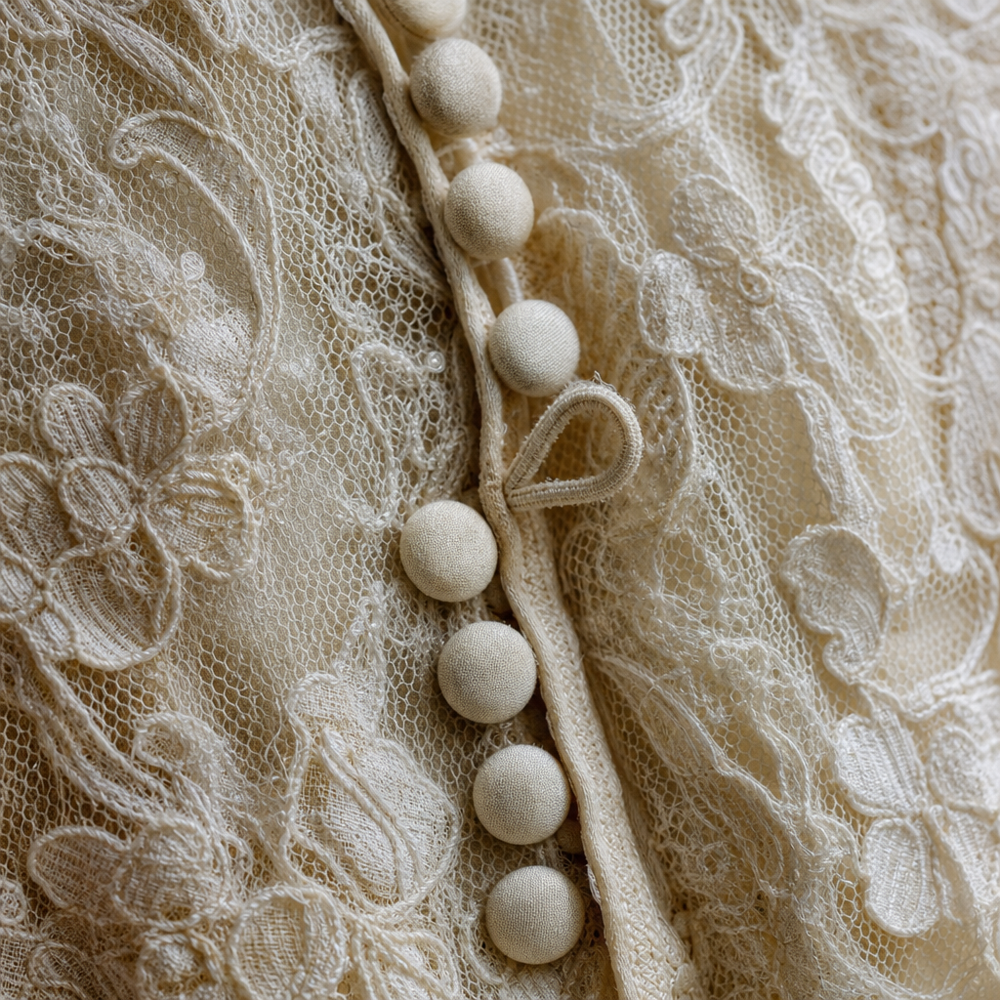

Bias-cut ivory silk
Narrow through the body with long fitted sleeves, small covered buttons at the cuff, and a modest train. The silk has aged to a warm ivory.
Circa 1946 · Fits like a modern 2

Seven decades of wedding gowns, from 1940s bias-cut silk to 1990s satin slips, professionally cleaned and restored, seen one bride at a time in a private room on Middlebrook Avenue.
Every gown here is one of one. Browse by decade before you drive, because brides come to us from Virginia, Maryland, West Virginia, North Carolina and DC, and nobody should make that trip on a guess.

Narrow through the body with long fitted sleeves, small covered buttons at the cuff, and a modest train. The silk has aged to a warm ivory.
Circa 1946 · Fits like a modern 2

Full bishop sleeves gathered at the cuff, cotton lace panels running the length of the bodice and skirt, matte rather than shiny.
Circa 1974 · Fits like a modern 6

Completely plain. Thin straps, a straight neckline, heavy satin falling straight to the floor. No lace, no beading, nothing to distract.
Circa 1997 · Fits like a modern 10

The number sewn into a vintage gown almost never matches the number you wear now. Here is what actually happens, by era.
| Era | Typically fits |
|---|---|
| 1940s to 1960s | Modern sizes 00 to 6 |
| 1970s | Varies widely; try it on |
| 1980s to early 2000s | Modern sizes 0 to 14 |
Many gowns can be tailored. With a skilled alterations specialist, some pieces have been sized up by as many as three sizes, depending on construction and how much fabric is hiding in the seams and trains.
One bride at a time, in a private room. No queue, no floor staff, no hovering. Bring your people or come on your own.
Breanna curates the collection and runs the appointments. She also owns Juniper Lane, the vintage storefront down the street, and spent years planning weddings before this, which is a useful thing in a person helping you choose a dress.
Most gowns are priced between $500 and $1,000.
There is also a discounted rack of flawed gowns, which are perfect if you intend to cut into something anyway.
An unsolicited design concept for Atlas & Ember, prepared by Ohtari Labs. This is not their website.